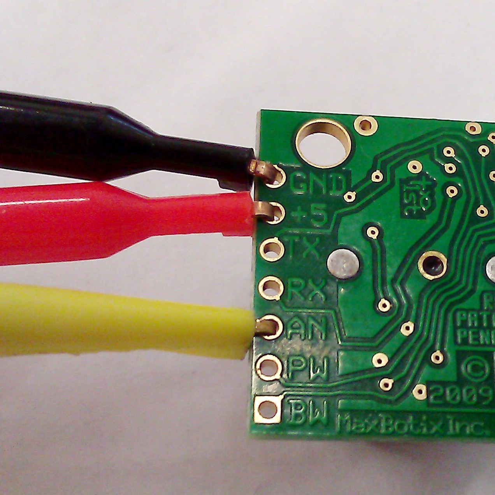

The best way to learn programming. The Arduino makes the distinct excitement of affecting the *physical* world through code accessible to newcomers. In this post, we introduce programming the Arduino via simple applications utilizing I/O devices like sensors, speakers, lights.
These demos were presented at the FOSS/Hacking/Innovation event at the Boston Museum of Science.
We go over the basics of programming the Arduino via example projects. This tutorial should be accessible by itself, but if you want to follow along, you will need the following:
This tutorial will cover the following projects, which each have their own hardware requirements:blink, an LED turning on and off (originally from Arduino examples)
pressure, a sensor which lights 4 LEDs depending on pressure applied
rangefinder, a sensor which outputs to a seven segment display distance in
feet
soundboard, a keypad which drives a speaker to say different phrases
You can find blink in the Arduino software examples, or copy it from the
code below. This sketch introduces the basic overview of an Arduino
program, and how to do output.
This simple sketch repeatedly turns an LED on and off. The blink program
requires an LED with the + end (shaped like a hook) plugged in digital pin
10, and the - end (the larger head) attached to the GND pin. See left.
When attached correctly, you can upload the following code blink.pde to continuously blink the LED:
// the setup routine runs once when you press reset:
void setup() {
// initialize the digital pin as an output.
pinMode(10, OUTPUT);
}
// the loop routine runs over and over again forever:
void loop() {
digitalWrite(10, HIGH); // turn the LED on (HIGH voltage)
delay(1000); // wait for a second
digitalWrite(10, LOW); // turn the LED off (LOW voltage)
delay(1000); // wait for a second
}
All Arduino programs require two functions:
setup, which runs once.
loop, which runs continually.
In this sketch, setup sets digital pin 10 to OUTPUT using the pinMode
function. This sets pin 10 to provide power, rather than detecting signal
(INPUT). This only needs to happen once.
Some Arduino models initialize pins to INPUT, but it's good to always set
a pin's mode to be sure.
In the loop, digitalWrite sends from pin 10 a high-volt signal to the +
end of the LED. This lights up the LED. The Arduino then pauses for one
second before sending a low-volt signal, which is not enough to light the LED.
The board then pauses again, before repeating indefinitely.
digitalWrite, pinMode, HIGH, LOW, delay are all defined in the
Arduino documentation.
The pressure demo consists of programming four LEDs to measure force on a
pressure sensor. This example will demonstrate how to handle input and
organize circuitry with a breadboard.
Each LED requires a connection to ground, but there is only one GND pin. This can be resolved by connecting GND to a vertical power rail with a male-to-male wire. These rails lie on either side of the breadboard; red arrows on the image on the right (from a Sparkfun tutorial) show the underlying connections of the rails. This allows the power rail to serve as ground for any component connected to it.
The rest of the circuit should be organized as follows:
setup initializes each LED pin mode to OUTPUT as in blink. Here we use a
global array to store which pins are connected to LEDs and loop through them in
setup.
loop first calculates the pressure. For our sensor, this is inversely related
to the signal received. analogRead gets the signal as a float, which we
invert and average over 60 readings to obtain a pressure value. Analog pins can only be used for INPUT, so we do not need to set pin
mode.
Next, loop compares pressure with each value in thresholds. If pressure
exceeds the first threshold, the first LED is lit; each LED has its own threshold.
The code (pressure.ino):
int pressurePin = 0;
int ledPins[] = {2, 3, 4, 5};
float thresholds[] = {0.04, 0.2, 1.0, 2.2};
void setup()
{
for (int i = 0; i < 4; i++) {
pinMode(ledPins[i], OUTPUT);
}
}
void loop()
{
float pressure;
// Average to get more accurate readings
for (int i = 0; i < 60 ; i++) {
// the stronger the pressure, the lower the input
pressure += 1 / analogRead(pressurePin);
delay(5);
}
pressure = pressure / 60;
for (int i = 0; i < 4; i++) {
if (pressure >= thresholds[i]) {
digitalWrite(ledPins[i], HIGH);
} else {
digitalWrite(ledPins[i], LOW);
}
}
delay(500);
}
When uploaded, the LEDs will light up according to how much pressure is applied to the sensor.
thresholds may need to be calibrated. For this, the serial monitor in the
Arduino IDE may prove useful. To use the monitor, insert Serial.begin(9600);
to set the baud rate in setup, then Serial.println(pressure); in loop
after calculating pressure to see its value.
This demo calculates distance in feet using an infrared rangefinder and uses a seven segment display (SSD) as output.
To follow along, you will need:
Both the rangefinder and SSD require additional power. The Arduino has a 5V pin which provides this power; connect this to the breadboard power rail with a male-to-male wire.
The SSD should be placed on the breadboard so that its bottom and top parts span the gap in the middle. Five male-male wires should be inserted above the SSD and four below (two on either side, with a gap in the middle). These wires should be connected to the pins numbered in the diagram on the right.
For the rangefinder, attached the 3 stripped cable ends (or ends with clips, as shown left) to the holes labeled GND, +5, and AN. The other ends should be plugged into the GND pin, power rail, and analog 0, respectively.
The resulting circuit should connect the rangefinder and SSD to power, the seven pins of the SSD to seven digital pins, and the rangefinder to analog 0 and GND.
This program is divided into a main file (rangefinder.ino) and two header files (range.h) and (ssd.h). The main program:
#include "ssd.h"
#include "range.h"
// This demo prints distance in inches to a 7-segment display
void setup() {
setupSSD();
}
void loop() {
int output = getRange(0);
displayNumber(output);
delay(1000);
}
The setup function sets the SSD digital pins to OUTPUT. The rangefinder is
analog, and thus can only be in INPUT mode. In loop, the Arduino
continually polls the distance to the target in inches and displays it on the
SSD.
The getRange function is defined in range.h, shown below. It averages over
sixy readings. The division by 2 is needed to scale the analog reading into
inches (see this for an in-depth
explanation).
#includefloat getRange(int pin) { // Returns distance to target in inches. pinMode(pin, INPUT); float distance = 0; // Average to get more accurate readings for (int i = 0; i < 60; i++) { // from http://playground.arduino.cc/Main/MaxSonar distance += analogRead(pin) / 2; delay(10); } return(distance / 60); }
The setupSSD and displayNumber functions are defined in ssd.h.
The file is too large to post here, but you can see it here
ssd.h. As mentioned previously, setupSSD sets the
SSD digital pins to OUTPUT. displayNumber is a switch case statement
which lights a subset of the seven segments (see SSD image) with digitalWrite;
segments lit depend on the number desired.
To assemble:
#include "touchpad.h" #include "speak.h" #includevoid setup() { touchpadSetup(); speakjetSetup(); } void loop() { int number = 0; while (number==0) number = getNumber(); switch (number) { case 1: // Hello say("HE FAST EHLE LO OWWW"); break; case 2: // I can speak say("OHIH P4 KE SLOW AY NE P4 SE PE SLOW IY EK"); break; ... case 9: byte ping[] = {20, 96, 21, 114, 22, 88, 23, 5, 252}; sound(ping); break; } delay(1000); }
As in rangefinder, there are setup functions for the Touchpad and Speakjet
shields. The loop first polls for a pressed number (getNumber returns 0 when
no button is pressed). A switch case then says a phrase depending on which
number is pressed, except for case 9, which calls the sound function.
The phrase is encoded using a string of space-separated phonemes. Looking into
say in speak.h reveals that say merely encodes the phoneme string into a
byte array, which is then passed into sound, which in turn calls
speakjet.print. Reprogramming a new phrase only involves looking up phonemes
(page 16 of the
user manual)
and codes for things like stop and speeding up pronunciation (page 15).
The code to make getNumber works is far more complicated; for more
information, check out the
product page.